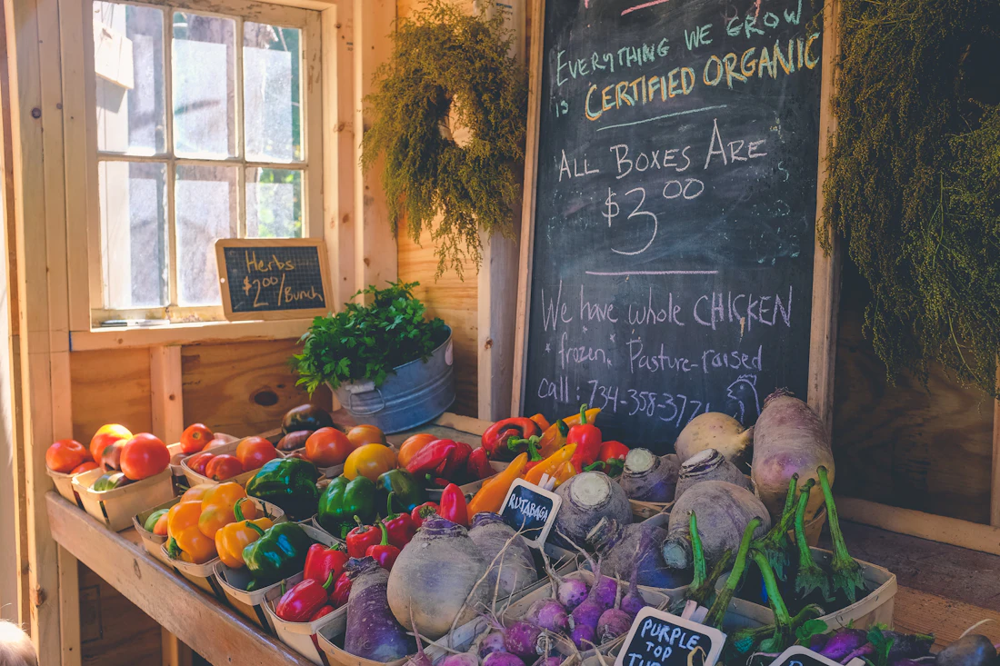

About the market
More than a market.A place to gather.
The Farmers Market at Mainstreet Acres brings local farmers, bakers, artisans, and small businesses together every weekend in Miami's Redland.
Our story
Rooted in Miami's farm country.
 Fresh from the Redland
Fresh from the RedlandMainstreet Acres sits in the heart of the Redland, Miami's agricultural community, where fields and groves are still part of everyday life.
We started the market to give that community a weekend home. A place where families can shop local, enjoy the outdoors, discover unique products, and support the small businesses that make South Florida special.
Every Saturday and Sunday, local farmers, cottage bakers, specialty food makers, artisans, and entrepreneurs set up side by side in a fun, family‑friendly atmosphere. Some are established businesses. Some are just getting started. All of them bring something worth discovering.
Every purchase goes straight to a farmer, maker, or small business from our community.
What we care about
The market we're building.
Shop local
Every purchase goes straight to a farmer, maker, or small business from our community.
Family first
A relaxed, all‑ages market where kids, parents, and grandparents all have a good time.
Quality & care
We look for vendors who bring quality, creativity, and something special to their table.
Room to grow
New businesses get a real place to meet customers, build a brand, and find their people.
On a market day
What you'll find.
- ProduceFresh fruits, vegetables, herbs, plants, and flowers from local growers.
- Baked goodsArtisan breads, sourdough, cookies, cakes, and pastries.
- PantryHoney, jams, sauces, dips, spreads, and spices.
- FarmCheese, milk, eggs, and other locally sourced farm products.
- HandmadeJewelry, candles, pottery, home décor, artwork, soaps, and skincare.
Want a table?
Be part of something special.
We're always looking for passionate vendors. Apply to join Mainstreet Acres Farmers Market.
Become a vendorVendor participation is subject to approval and availability.